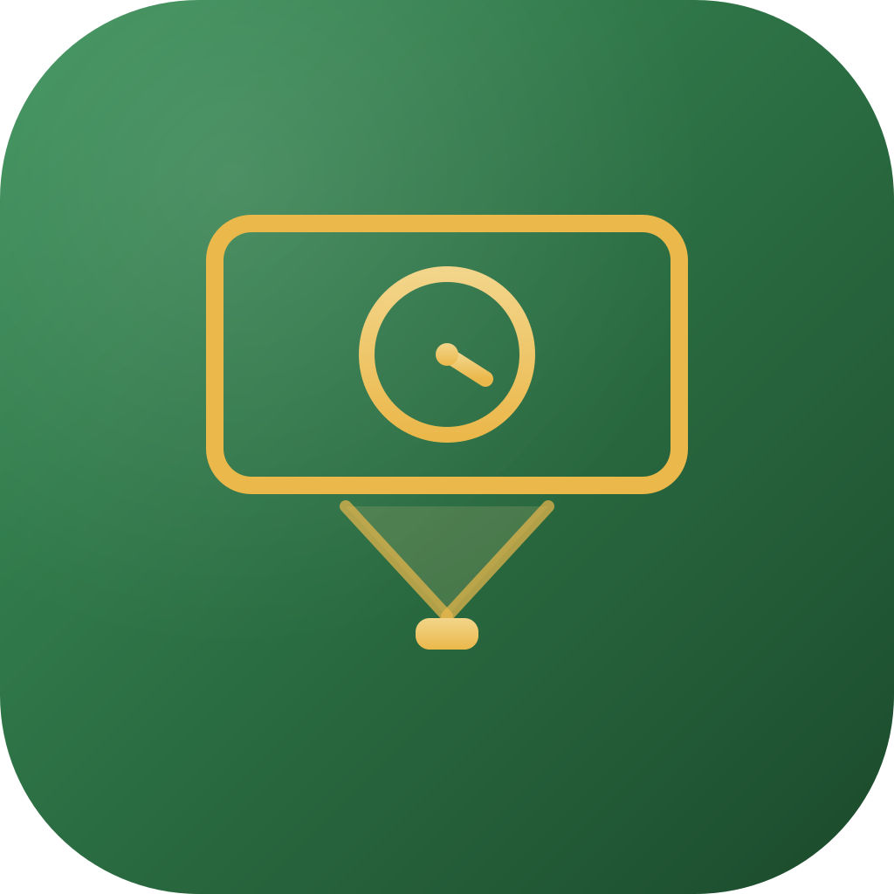

BetaSundayScreen
Put the whole lesson on the projector: a clock, a big countdown, today's message, a traffic light and work symbols, a name picker, a group maker and dice. Everything runs in one calm, fullscreen window on your own machine — no account, no cloud, and no internet needed. Free desktop app for Mac and Windows.
Eight widgets, one calm screen
Drag, resize and arrange the tools right on the display surface — the layout is yours.
Clock & timer
A digital or analog clock, a countdown with huge digits and a gentle chime, and a stopwatch. The timer keeps perfect time even if the machine sleeps.
Name picker & groups
Draw a random pupil — with no repeats until everyone has had a turn — and split the class into fair groups in one click.
Traffic light & work symbols
Show how to work right now: silence, whisper, collaborate or hands up — a classic traffic light and clear symbols the class reads at a glance.
Dice & text
Roll one to three animated dice, and put big messages on the screen in beautiful type.
Class profiles
Every class keeps its own name list and its own screen layout. Switch class in two clicks and everything follows.
Fully offline
No account, no cloud, no telemetry. Pupil names never leave the machine — they live only in a local database.
Local first. Pupil names never leave the machine.
SundayScreen is a desktop app, not a web service. There is nothing to sign into and nothing is uploaded — the school network can be down all day and the screen won't care. If the machine restarts mid-lesson, the app brings back exactly the screen you had: the drawn name, the light colour, the dice.
- No account, no telemetry — pupil data stays on the machine
- A restart mid-lesson restores the screen exactly
- Free and open source (MIT)
Standalone — but part of the family
The tool stands entirely on its own, but shares the account, design language and golden thread with the rest of Sunday Suite.
Status: beta
SundayScreen is out in beta and free to download and use today. It grew out of a teacher's own classroom, as part of the Sunday Suite family — this page is its home, and the download buttons always fetch the latest release.
Download & install notes
Mac: Apple Silicon (M1 or newer) only for now. The beta is not yet signed with an Apple developer certificate, so the very first launch is right-click the app → Open.
Windows: the installer can trigger a SmartScreen notice the first time — choose More info → Run anyway.
Ready for Monday morning?
Download SundayScreen free for Mac and Windows — no account needed — or get in touch to follow development.